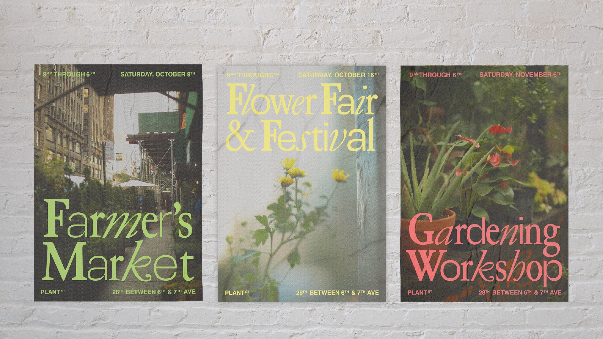

A Typographic Study of the Ten Point Program (2021)
A series of posters that take inspiration from the visuals/language used by the Black Panther Party.
A series of posters that take inspiration from the visuals/language used by the Black Panther Party.

A book on the reliability of Wikipedia, sourced from Wikipedia.
A mobile, web-based, time-wasting microgame.
A visual identity for a community of NYC plant stores.

An interactive memoir of my experience of being a second-gen immigrant.

A museum brand identity for the legendary Blue Note Records.